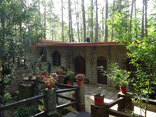
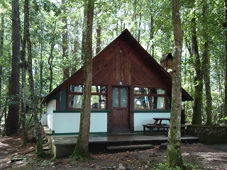
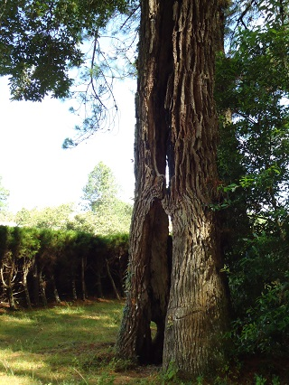
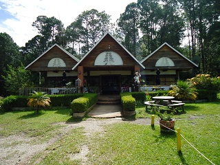
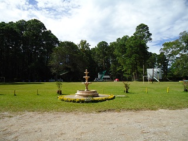

Es un restaurant que colinda con la colonia Los Lotes (Pueblo Nuevo Solistahuacan), el cual se encuentra rodeado de abundante vegetación boscosa, común de la region, principalmente árboles de ocote y cipres.
Principalmente se frecuenta para presenciar eventos deportivos como son carreras de caballos y torneos de futbol. Ademas es comun que se celebren diferentes festejos como son: Bodas, Bautizos, Cumpleaños, entre otros. Cuentan con cabañas, las cuales son rentadas por dia.
Se localiza en el municipio de Jitotol, a 3 kilómetros del municipio de Pueblo Nuevo Solistahuacan y a 16 kilómetros del municipio de Jitotol.
Si se encuentra en Jitotol, ir a la entrada principal y tomar la carretera 195 con dirección a Pueblo Nuevo Solistahuacan, sin desviarse, en 16 km, podrá estar llegando.
Si viene de Pueblo Nuevo Solistahuacan o cualquier otro lugar en el que pasen por Pueblo Nuevo, ir a la carretera 195 y tomar rumbo a Jitotol, pasando el Ejido "Los Lotes", observará una serie de topes, continuar un 1 km más aproximadamente y verá el letrero del lugar.
Si se encuentra en Tuxtla Gutiérrez, puede tomar la carretera federal 190 rumbo al escopetazo (Camino viejo a San Cristóbal, Chiapas); al llegar al escopetazo encontrara un puesto de revisión militar, en donde se desviará a la carretera internacional 195 con rumbo a Ixtapa, Chiapas; seguir en ese tramo.
En Bochil encontrará un entronque conocido como "La Tijera", donde encontrara 3 caminos, seguir por la ruta 195, con la cual llegará hasta el municipio de Jitotol, Chiapas. Llegando a Jitotol continuar por la carretera 16 km más, prácticamente llegando al Municipio de Pueblo Nuevo Solistahuacan, Chiapas.
En el lugar usted puede practicar actividades como:





posicione el mouse o de click sobre las imágenes
{kind=link}
{kind=link}
{kind=link}
{kind=link}
{kind=link}